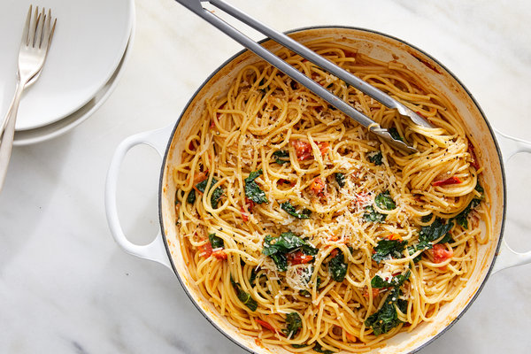

Spaghetti

One-Pot Spaghetti With Cherry Tomotaoes
In this simple recipe, raw pasta and cherry tomatoes are simmered together in a single pan, cooking the pasta and forming a thick, starchy sauce at the same time.
Ingredients
- 1 pound of spaghetti
- 1 pound of cherry tomatoes, halved (about 2 pints)
- 2 lemons, zested
- 1/4 cup + 3 tablespoons of olive oil
- 2 teaspoons of kosher salt (more to taste if necessary
- Black pepper to taste
- Parmesan cheese for each serving
Steps
- Bring just over a quart of water to a boil.
- Place spaghetti, tomatoes, lemon zest, oil, and 2 teaspoons of kosher salt in a large, dry, shallow pan. (The pan should fit the dry spaghetti.)
- Carefully add the boiling water to the pan with the spaghetti. Cover pan, and bring up to a boil.
- Remove lid and simmer for about 6 minutes, using tongs to move the spaghetti around now and then so it doesn't stick.
- Add kale or spinach and continue cooking until remaining liquid has reduced to a sauce and the pasta is cooked through.
- Taste, season with salt and pepper, and top with Parmesan.
Homepage